| 段 | 枚 | 目安 |
|---|---|---|
| 1. オープニング | 1〜4 | 約3分 |
| 2. 2日間の振り返り | 5〜6 | 約3分 |
| 3. お家でやってみる 学びのスイッチ | 7〜12 | 約9分 |
| 4. 8歳までの時間 | 13〜16 | 約4分 |
| 5. 3つ目の鍵 続け方 | 17〜24 | 約11.5分 |
| 6. 私たちが目指していること | 25〜29 | 約6分 |
| 7. 講座と個別説明会 | 30〜37 | 約10分 |
| 8. 課題・プレゼント・質疑応答 | 38〜40 | 約3分 |
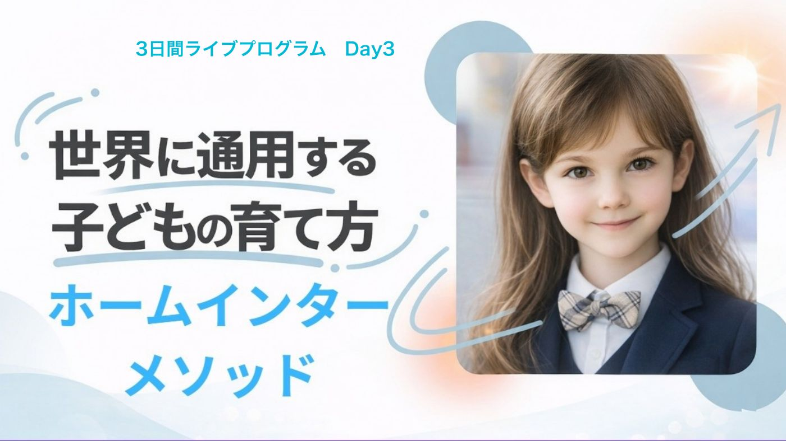
画面の文字：3日間ライブプログラム Day3
皆さん、こんばんは。ピグマリオン恵美子です。
3日間ライブ、今日が最終日です。ここまでご参加くださって、ありがとうございます。
オンタイムの皆さん、チャットに、お子さんのご年齢と、どちらからご参加か、書いてくださいね。
【書いてくれた方を2〜3人読み上げる】
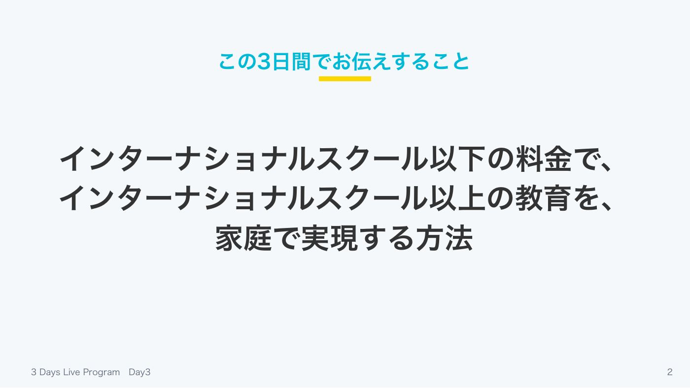
画面の文字：この3日間でお伝えすること／インターナショナルスクール以下の料金で、インターナショナルスクール以上の教育を、家庭で実現する方法
この3日間でお伝えしているのは、
インターナショナルスクール以下の料金で、インターナショナルスクール以上の教育を、家庭で実現する方法です。
今日で、そのお話が全部つながります。
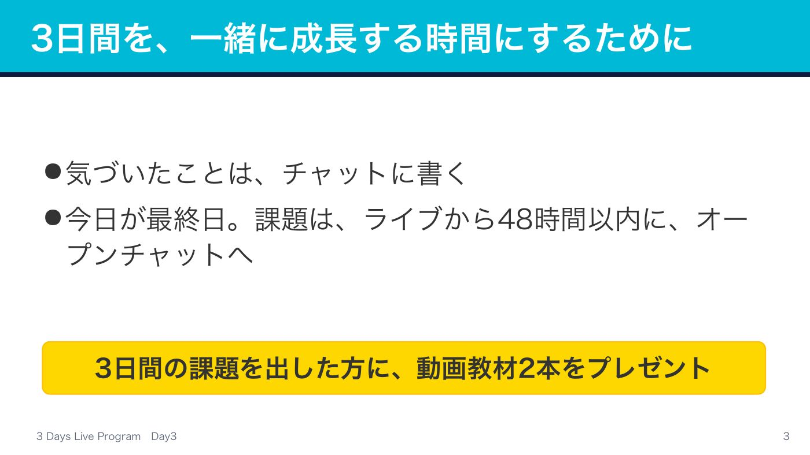
画面の文字：3日間を、一緒に成長する時間にするために／3日間の課題を出した方に、動画教材2本をプレゼント／気づいたことは、チャットに書く 今日が最終日。課題は、ライブから48時間以内に、オープンチャットへ
今日も、気づいたことは、どんどんチャットに書いてください。
課題は、今日が最後です。ライブから48時間以内に、オープンチャットに出してくださいね。
3日間の課題を出してくださった方には、受講生さんが講座で使っている動画教材を、2本プレゼントします。昨日お話しした「浮く？ 沈む？」の遊びも入っていますよ。
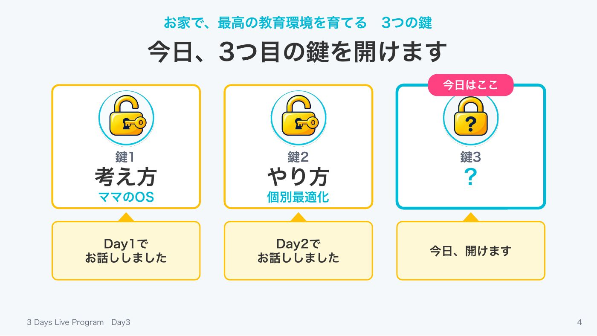
画面の文字：今日、3つ目の鍵を開けます／鍵1／考え方／ママのOS／鍵2／やり方／個別最適化／鍵3／？／最後に残った、3つ目の鍵です
お家で最高の教育環境を育てる、3つの鍵。
1つ目の鍵「考え方」と、2つ目の鍵「やり方」は、もう開きました。
今日は、最後に残った3つ目の鍵を開けます。
そして、私たちが何を目指しているのか。そこまで、お話ししますね。
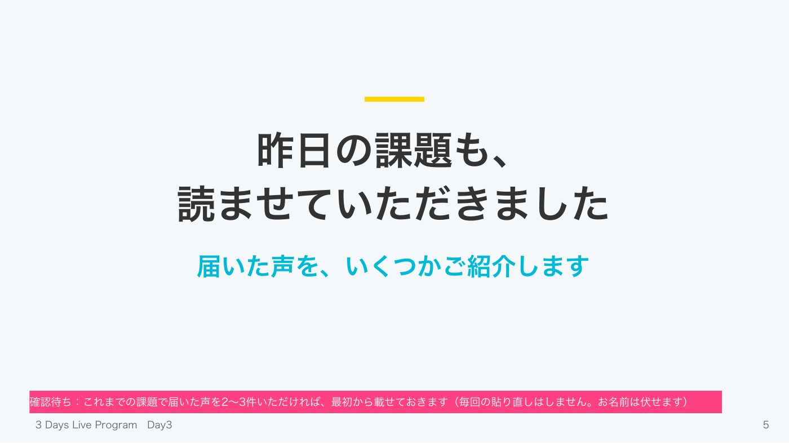
画面の文字：昨日の課題も、読ませていただきました／届いた声を、いくつかご紹介します
昨日の課題も、読ませていただきました。
【その回に届いた声を2〜3件、その場で読み上げる。スライドには貼らない。お名前は出さない。「伸びている所」「これからの所」を書いてくれた声を1つ入れる】
お子さんのことを、こんなに考えている。それが伝わってきて、うれしかったです。
（確認待ち：これまでの課題で届いた声を2〜3件いただければ、最初から載せておきます（毎回の貼り直しはしません。お名前は伏せます））
画面の文字：ここまでの2つの鍵／今日は、この2つがお家でどう合わさるのかから／鍵1 考え方：最初に変わるのは、ママ 鍵2 やり方：現在地を知って、一段ずつ
2日間を、一言ずつで振り返りますね。
1つ目の鍵、「考え方」。最初に変わるのは、ママでした。管理するママではなく、太陽のママ。
2つ目の鍵、「やり方」。正解は、わが子の中にある。現在地を知って、一段ずつ登っていく。
今日は最初に、この2つが、お家の中でどう合わさるのかを見ていきます。
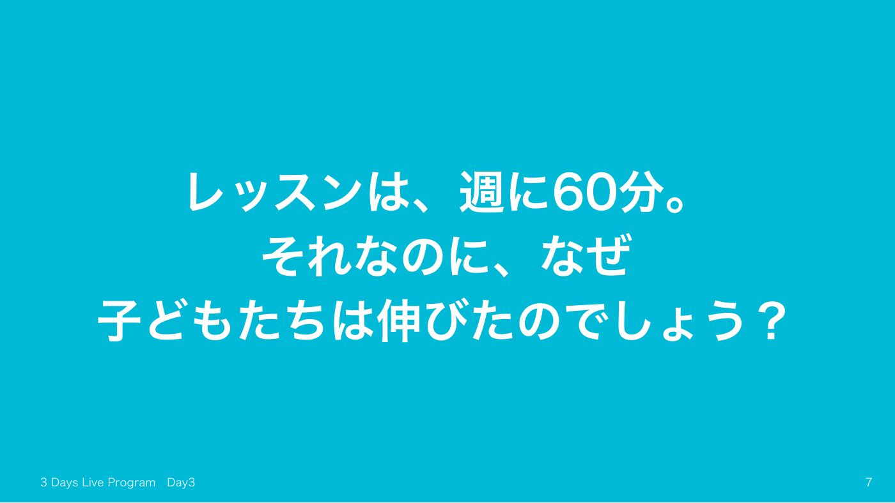
画面の文字：レッスンは、週に60分。それなのに、なぜ子どもたちは伸びたのでしょう？
私たちの英語スクールのレッスンは、1週間に60分だけでした。
それなのに、子どもたちは大きく伸びていきました。
なぜだと思いますか？
【少し間を取る】
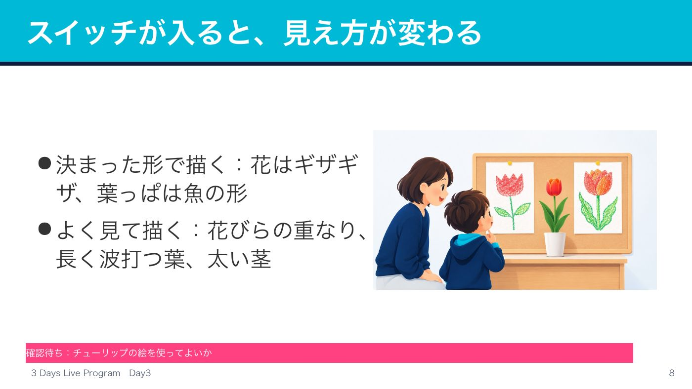
画面の文字：残りの6日と23時間に、「学びのスイッチ」が入っていたから／1日10分は、スイッチを入れるための時間／英語スクールのレッスン：週に60分 お家の時間：6日と23時間
答えは、レッスン以外の時間にあります。
残りの、6日と23時間。
その時間に、学びのスイッチが入ったままなのか。それとも、スイッチが入っていない、いつもの暮らしなのか。
伸びた子たちは、スイッチが入ったままだったんです。
思考のスイッチ、探究のスイッチ、手先のスイッチ。何でもいいんです。スイッチが入ると、24時間365日が、学びの時間になります。
だから私たちは、「1日10分でいいですよ」とお伝えしています。10分で長く遊ぶことが目的ではなくて、その10分で、スイッチを入れることが目的なんです。
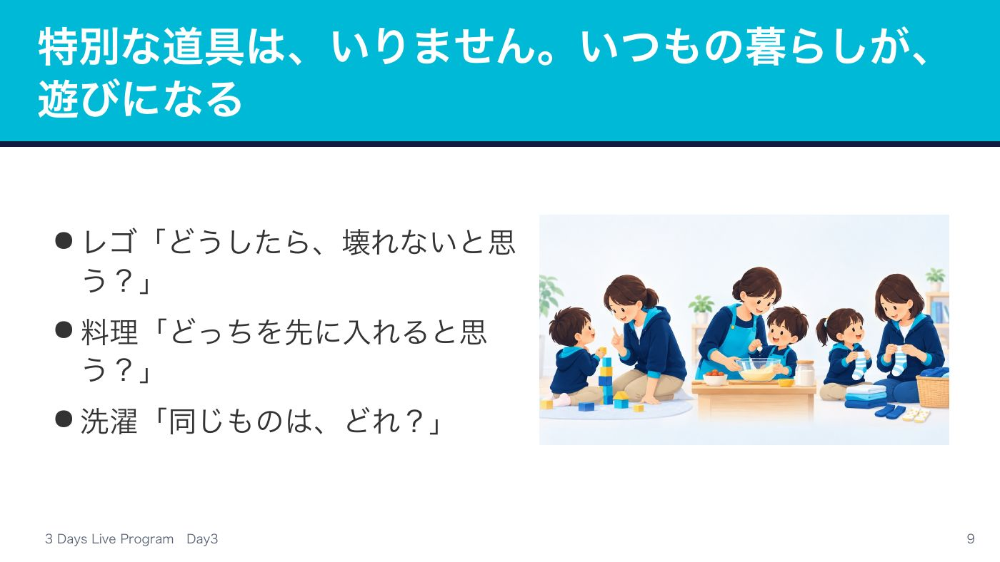
画面の文字：スイッチが入ると、見え方が変わる／決まった形で描く：花はギザギザ、葉っぱは魚の形 よく見て描く：花びらの重なり、長く波打つ葉、太い茎
スイッチが入っているかどうかは、絵を描いてもらうと、よく分かります。
チューリップを見て、描いてもらいます。
スイッチが入っていないと、花はギザギザ、茎は細い線、葉っぱはお魚のような形。見て描いているのに、頭の中の「チューリップといえば、これ」を描いてしまうんですね。
でも、本当のチューリップは、違いますよね。
花びらが何枚もあって、重なり合っているから、たまたまギザギザに見えるだけです。葉っぱは、もっと長くて、波打っています。茎は、ストローのように太い。
観察する力、探究する力、考える力。それがある子とない子では、描くものが、これだけ違ってきます。
スイッチが入ると、本当に、世界の見え方が変わるんです。
（確認待ち：チューリップの絵を使ってよいか）
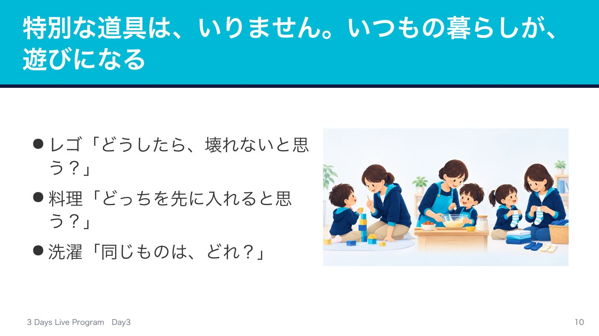
画面の文字：特別な道具は、いりません。いつもの暮らしが、遊びになる／レゴ「どうしたら、壊れないと思う？」 料理「どっちを先に入れると思う？」 洗濯「同じものは、どれ？」
では、スイッチは、どうやって入れるのか。
特別な道具は、いりません。いつもの暮らしが、そのまま遊びになります。
レゴが崩れたら、「どうしたら、壊れないと思う？」。考える力です。
お料理のときに、「どっちを先に入れると思う？」。順番を考える力、自分でやる力です。
洗濯物をたたむときに、「同じものは、どれ？」。仲間分けですね。昨日のゴミの仕分けと同じ、論理的に考える力の最初の一歩です。
これ、もうやっていますよね。レゴも、お料理も、お洗濯も。
違うのは、1つだけです。そこに、スイッチを入れる一言があるかどうか。
その一言のお手本になるのが、昨日お話しした動画教材です。お手本を見ながら一緒に遊ぶうちに、ママの口から、自然にその一言が出るようになっていきます。
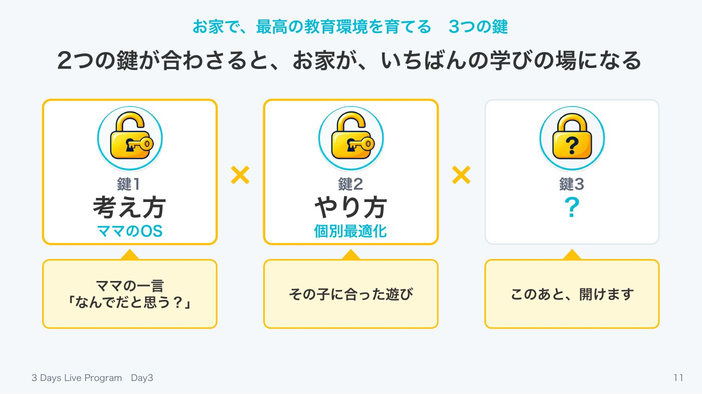
画面の文字：同じ遊びでも、ママの一言で変わる／思考を止めるか、広げるか。それは、ママの一言／「違うよ」「だから言ったでしょ」→ 思考が止まる 「なんでだと思う？」「ほかにも、あるかな？」→ 思考が広がる
ただ、同じ遊びをしても、伸びるご家庭と、そうでないご家庭があります。
違いは、遊びではありません。ママの一言です。
お子さんが間違えたとき。
「違うよ」「だから言ったでしょ」
こう言うと、お子さんの考えは、そこで止まります。
「なんでだと思う？」「ほかにも、あるかな？」
こう言うと、お子さんの考えは、そこから広がります。
思考を止めるのか、広げるのか。それは、ママ次第なんです。
1日目にお話しした、管理するママと太陽のママの違いが、ここに出てきます。
画面の文字：遊びの中身（鍵2）× ママの一言（鍵1）／お家が、いちばんの学びの場になる
その子に合った遊びを選ぶ。これが、2つ目の鍵でした。
そこに、ママの一言がある。これが、1つ目の鍵でした。
この2つが合わさったとき、お家が、いちばんの学びの場になります。
インターナショナルスクールに通わなくても、お家でできる。そうお伝えしてきたのは、こういうことなんです。
画面の文字：3〜8歳が、ゴールデンタイム／ゴールデンタイム3〜8歳／手が離れていく／0歳／3歳／8歳／12歳／脳と心の土台が、ぐんぐん育つ時期／この時期の関わり方が、一生の土台になります
1日目に、3歳から8歳がゴールデンタイムだというお話をしました。
脳の土台が、いちばん育つ時期です。
では、ここで一緒に、数えてみましょう。
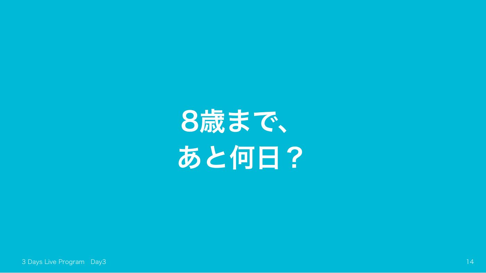
画面の文字：8歳まで、あと何日？
お子さんが8歳になるまで、あと何日あるでしょうか。
【少し間を取る】
画面の文字：お子さんが8歳になるまで／お子さんの「あと何日」を、チャットに書いてください／4歳のお子さん → あと1460日 6歳のお子さん → あと730日
4歳のお子さんなら、あと1460日です。
6歳のお子さんなら、その半分。あと730日です。
皆さんのお子さんは、あと何日でしょうか。チャットに書いてみてください。
【チャットを読む】
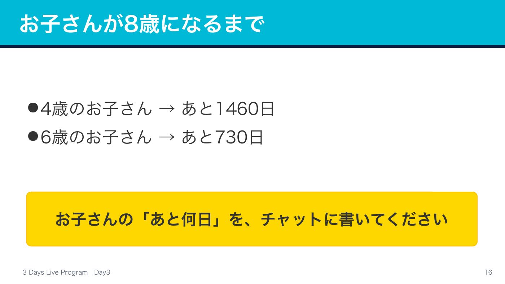
画面の文字：毎日なら1460回。週に1回なら、その7分の1／だから、今日から／4歳：毎日なら1460回。週に1回なら、約200回 6歳：毎日なら730回。週に1回なら、約100回
4歳のお子さんの1460日というのは、毎日、スイッチを入れる遊びをしたときの数です。1460回、チャンスがあります。
でも、週に1回しかできなかったら、どうでしょう。7分の1です。
6歳のお子さんなら、もともと730回。週に1回だと、100回ほどしかありません。
だから、今日から始めていただきたいんです。
今日、お家で、1つだけ、一言を変えてみてください。
（確認待ち：日数の計算の言い方）
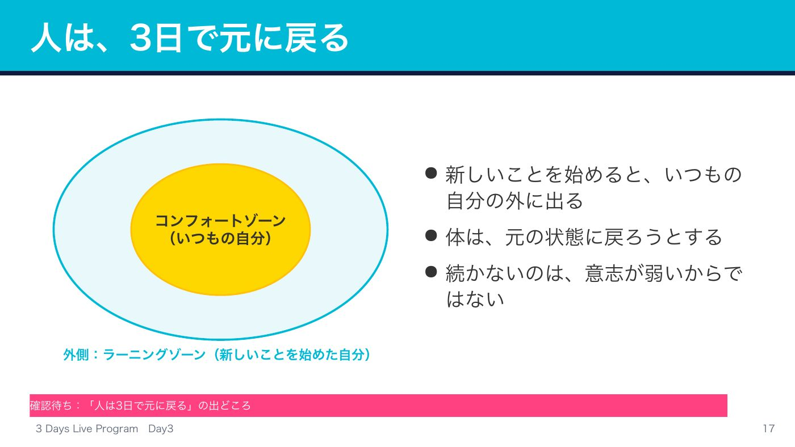
画面の文字：やろうと思った。でも、続けられそうですか？
ここで、正直にお聞きします。
3日間聞いて、「よし、やろう」と思ってくださった方、多いと思います。
でも、続けられそうですか？
【少し間を取る】
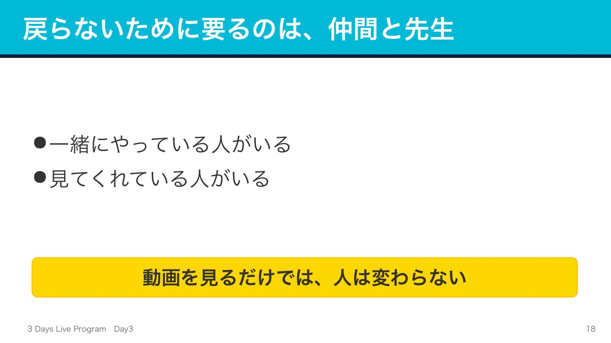
画面の文字：人は、3日で元に戻る／コンフォートゾーン（いつもの自分）／外側：ラーニングゾーン（新しいことを始めた自分）／新しいことを始めると、いつもの自分の外に出る 体は、元の状態に戻ろうとする 続かないのは、意志が弱いからではない
人には、コンフォートゾーンというものがあります。今の、いつもの暮らしです。慣れていて、楽なんですね。
何か新しいことを始めると、一歩外に出ます。ダイエットでも、資格の勉強でも、同じです。
ところが、人は、だいたい3日で元に戻ってしまうと言われています。
人の体には、今の状態を保とうとする働きがあります。体にとっては大事な働きなのですが、新しいことを始めたときには、これが逆に働いてしまう。とにかく、元の暮らしに戻ろうとするんです。
だから、続かないのは、意志が弱いからではありません。人は、そういうふうにできているんです。
（確認待ち：「人は3日で元に戻る」の出どころ）
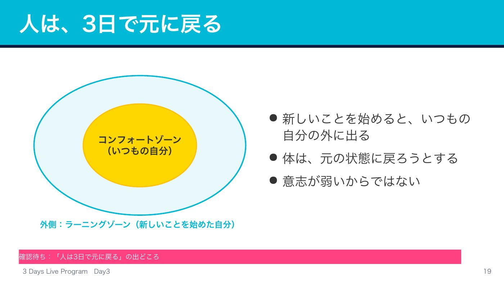
画面の文字：戻らないために要るのは、仲間と先生／動画を見るだけでは、人は変わらない／一緒にやっている人がいる 見てくれている人がいる
では、どうすれば、戻らずにいられるのか。
仲間の存在と、先生の存在です。
一緒にやっている人がいる。見てくれている人がいる。それがあると、人は新しい自分のままでいられます。
動画を見るだけでは、人はなかなか変わりません。これは、子育てに限った話ではないですよね。
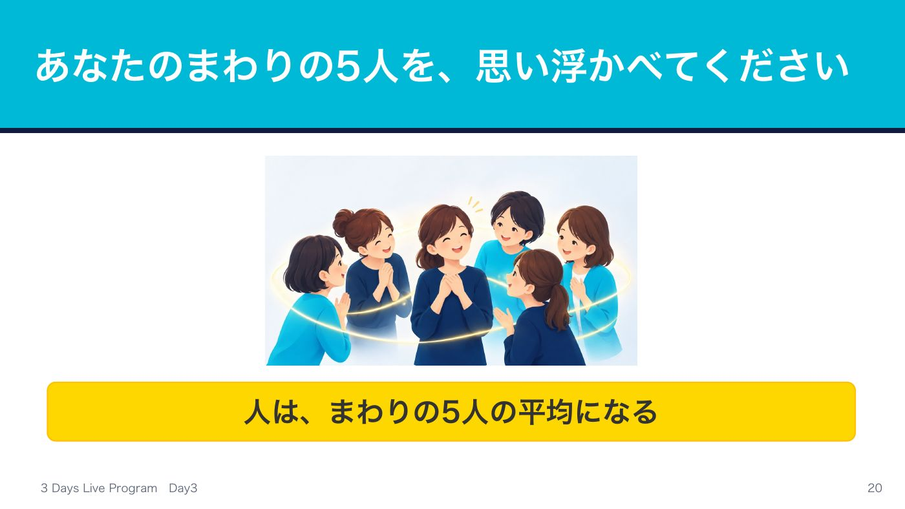
画面の文字：あなたのまわりの5人を、思い浮かべてください／人は、まわりの5人の平均になる
もう一つ、お聞きします。
よく会うお友達を、5人、思い浮かべてください。
【少し間を取る】
人は、まわりの5人の平均になる、と言われています。
その5人は、どんな方でしょうか。お子さんのこれからについて、どんな話をしていますか。
もし皆さんが、自分で考えて動ける子に育てたい、と思っているなら。同じ方向を向いている人が、まわりにいるでしょうか。
これは、今のお友達が良い悪い、というお話ではありません。同じ方向を向いて、一緒に続けられる仲間がいるかどうか、というお話です。
画面の文字：私にも、その5人がいない時期がありました／娘の幼稚園では、幼児教育のことを言えなかった 仲間ができて、私が変わった 子どもたちも、自分で企画を立てるように
私にも、その5人がいない時期がありました。
娘が通っていたのは、のびのびした幼稚園でした。そこでは、私は英語スクールをやっていることも、幼児教育のことも、言えませんでした。小学校受験をしたのも、学年で、うちと、もう1人だけ。
当時のその場所には、私の5人は、いなかったんです。
そのあと、グローバルキッズマムを作りました。仲間ができて、私自身が変わりました。そして、子どもたちも変わっていったんです。
娘が小学校2年生のときのことです。ママたちが英語のイベントをいろいろやっているのを見ていて、自分たちにもできる、と思ったんでしょうね。お友達と3人で、「お姉さんと遊ぼう」という企画を立てました。小さい子たちに紙芝居を読んであげたり、釣りの遊びをしてあげたり。おやつ代もちゃんといただいて、自分たちでお預かりをしたんです。
私たちは、隣の部屋から、じっと見ていました。
一人だったら、やらなかったと思います。仲間のママたちの子どもたちがいたから、できたことです。
仲間がいたから、今の私があって、今の子どもたちがいます。
（確認待ち：このお話を、Day3で話してよいか）
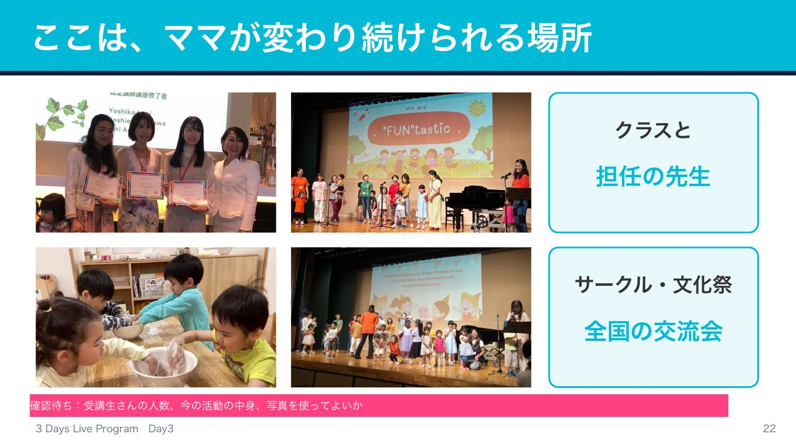
画面の文字：ここは、ママが変わり続けられる場所／クラスと／担任の先生／サークル・文化祭／全国の交流会
グローバルキッズマムは、動画を見るだけの場所ではありません。
クラスがあって、担任の先生がいます。サークルがあって、文化祭があって、交流会やランチ会があります。学校のような場所なんです。
そして、私の一番の自慢は、ここにいるママたちです。
お互いに刺激を受けながら、いつの間にか、自然に変わっていく。そういう場所になっています。
私は、日本一のママコミュニティだと思って、運営しています。
（確認待ち：受講生さんの人数、今の活動の中身、写真を使ってよいか）
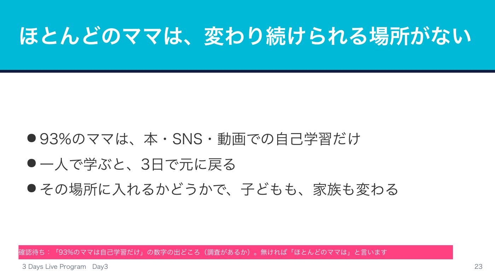
画面の文字：ママも、パパも変わっていく／子どものためなら、変われる／ママ：文化祭で、子どもと一緒に前に出て発表する パパ：「家の空気が、こんなに変わるなら」
仲間の中にいると、ママが変わっていきます。
今まで、人の前に出ることがなかったママが、文化祭で、お子さんと一緒に前に出て発表する。英語でスピーチをする。そういうママが、とても多いんです。
子どものためなら、変われる。私たち母親は、そういうものですよね。
受講生さんのご主人に、お話を聞いたことがあります。
前は、家に帰ると、いつも空気がピリピリしていたそうです。お母さんと子どもがけんかをしている。きょうだいでも、けんかをしている。疲れて帰ってくるお父さんは、正直つらいですよね。
それが、帰ると笑顔で迎えてくれるようになった。けんかもしていない。
何が変わったのか。お母さんが、感情で叱るのをやめて、導く声かけに変わった、とおっしゃっていました。
「家族の空気がこんなに変わるなら、やってよかった」
そう話してくださいました。
（確認待ち：パパのインタビューを紹介してよいか）
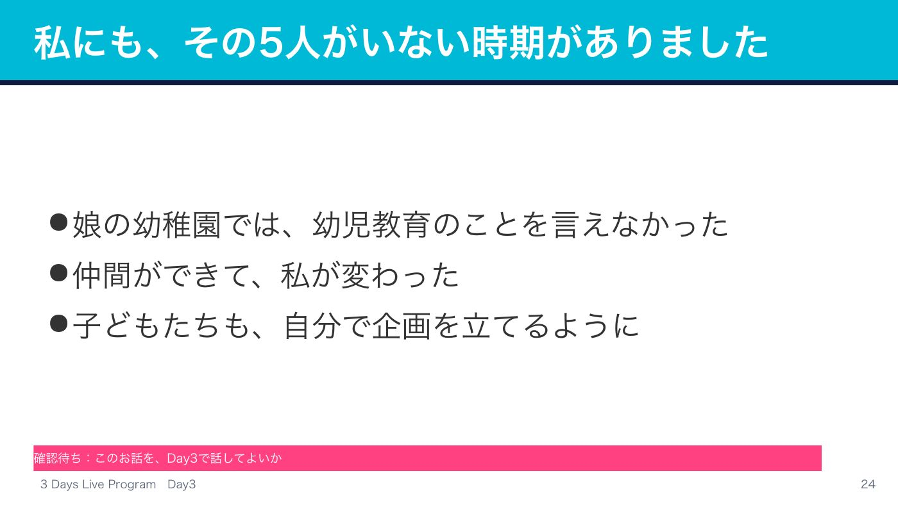
画面の文字：3つ目の鍵が開きました／鍵1／考え方／ママのOS／鍵2／やり方／個別最適化／鍵3／続け方／考え方 × やり方 × 続け方
これが、3つ目の鍵です。「続け方」。続けられる環境です。
考え方。やり方。続け方。
3つの鍵が、全部開きました。
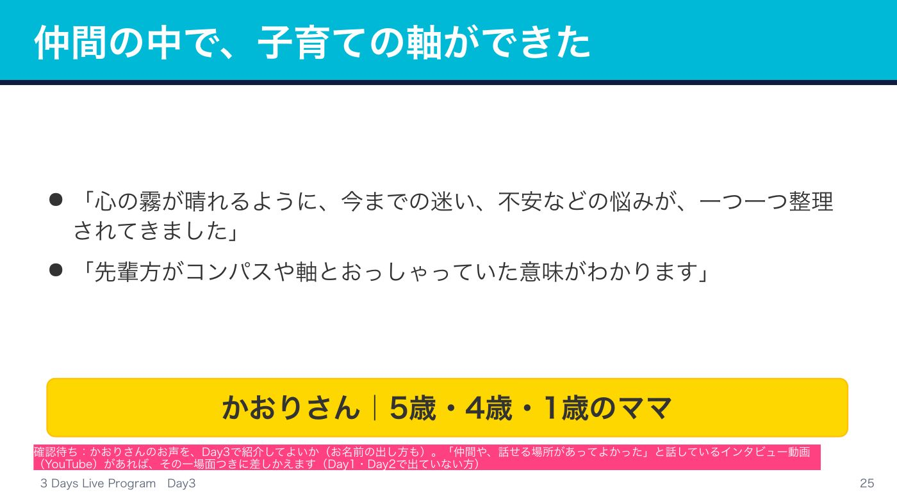
画面の文字：私たちは、何を目指しているのでしょうか
3つの鍵が開いた先に、何があるのか。
私たちは、何を目指しているのでしょうか。
【少し間を取る】
画面の文字：8歳までに「学びの根っこ」を育てれば、その後は、自分で伸びていく／親は、背中を見せるだけ
私たちが目指しているのは、これです。
8歳までに、学びの根っこを、しっかり育てる。
そうすると、その後は、子どもが自分で、自分を伸ばしていきます。
ずっと心配して、ずっと手を引いていかなくていいんです。親は、背中を見せるだけ。
お子さんにとっても、ママにとっても、それが一番楽で、一番幸せな形だと思っています。
うちの子たちも今、自分で決めたことを、自分でやっています。
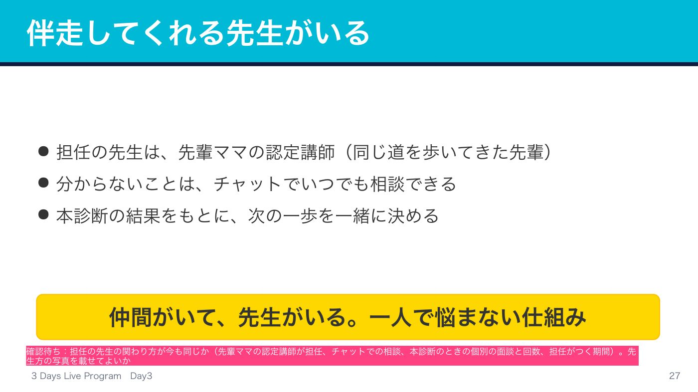
画面の文字：自分で考え、行動できる子が増えれば、社会は良くなる
そして、そういう子が一人、また一人と増えていけば、社会は良くなります。
昨日、子育ては、ママにできる一番身近な社会貢献だとお話ししました。
2050年、子どもたちが大人になった世界で、自分で考えて、世界の人と手を取り合って生きていけるように。
それが、私たちが目指していることです。
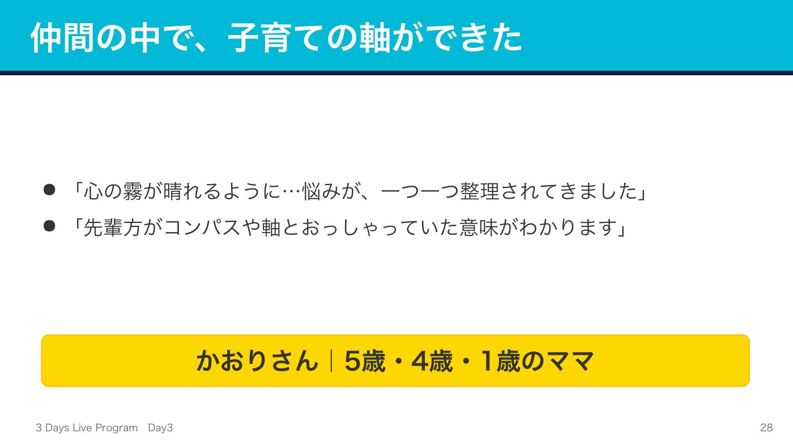
画面の文字：3日間でお伝えしたこと／世界に通用する子ども／インターナショナルスクール以下の料金で、以上の教育を、家庭で／鍵3 続け方：続けられる環境（仲間と先生）／鍵2 やり方（個別最適化）／8つの力／診断で、現在地を知る／Can Doリストと、遊び／鍵1 考え方：ママのOS（最初に変わるのは、ママ）
3日間でお伝えしてきたことを、1枚にまとめます。
いちばん下の土台が、ママの考え方です。1つ目の鍵でした。ここがないと、どんなに良い教材があっても、伸びていきません。
その上にあるのが、やり方です。2つ目の鍵でした。8つの力を見て、診断で現在地を知って、Can Doリストのはしごを、遊びで一段ずつ登っていく。
そして、全体を包んでいるのが、続けられる環境です。3つ目の鍵でした。仲間と先生がいるから、元に戻らずに続けられる。
この3つがそろったとき、いちばん上の、世界に通用する子どもが育っていきます。
インターナショナルスクール以下の料金で、インターナショナルスクール以上の教育を、家庭で実現する方法。
最初の日からお伝えしてきたのは、このことだったんです。
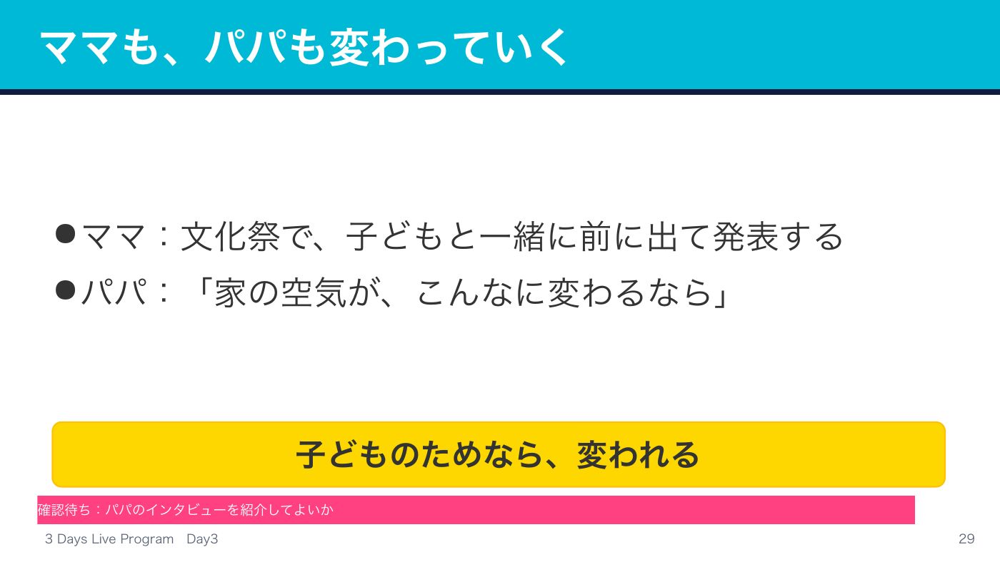
画面の文字：どれか1つだけでは、たどり着けません／教材だけ → ママの考え方が変わらないと、伸びない 考え方だけ → わが子に合ったやり方が分からない 一人だけ → 3日で元に戻る
大事なのは、どれか1つだけでは、たどり着けない、ということです。
良い教材だけあっても、ママの考え方が変わらなければ、伸びていきません。
考え方だけ学んでも、わが子に合ったやり方が分からなければ、動けません。
両方分かっても、一人だと、3日で元に戻ってしまいます。
昨日、つまみ食いママのお話をしましたよね。良いと聞いたものを少しずつ取り入れても、不安は消えない。それは、3つがつながっていないからです。
画面の文字：そのために、仲間が必要です／だから、グローバルキッズ講座があります
自分で考え、行動できる子を、一人でも多く育てたい。
そのためには、本当に変われるママが、一人でも多く必要です。私たちには、仲間が必要なんです。
だから、グローバルキッズ講座があります。
ママが学ぶ、母親のための講座です。
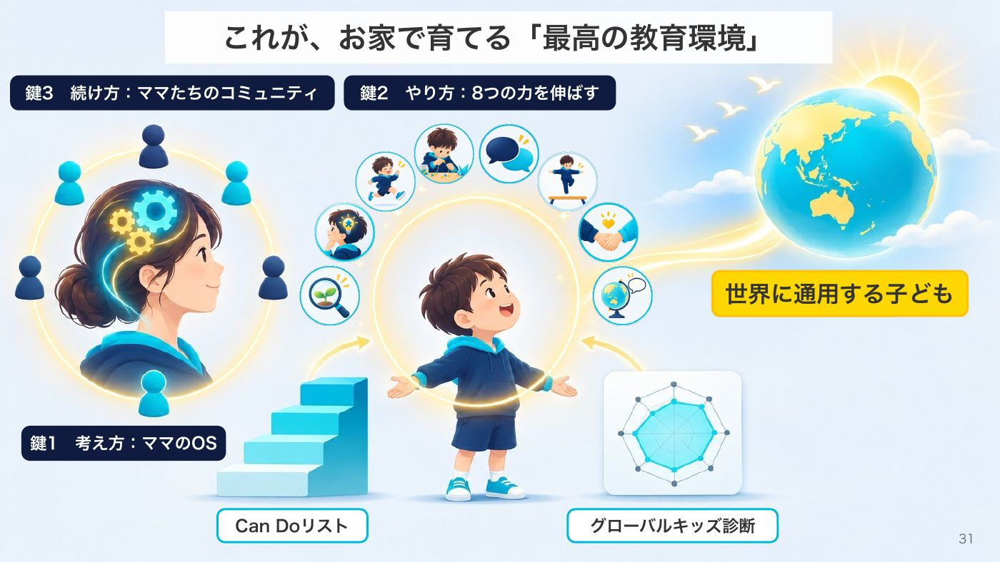
画面の文字：講座に、3つの鍵がぜんぶそろっています／鍵1 考え方／8つの魔法の言葉ワーク 担任の先生／鍵2 やり方／本診断 Can Doリスト 動画教材200本以上／鍵3 続け方／クラス・サークル 全国の交流会 ママが輝く文化祭
この講座には、3つの鍵が、ぜんぶそろっています。
1つ目の鍵、考え方。ママ自身が取り組む「8つの魔法の言葉ワーク」があります。担任の先生が、一緒に見ていきます。
2つ目の鍵、やり方。本診断でお子さんの現在地を測って、Can Doリストで次の一段を知って、200本以上の動画教材の遊びで登っていきます。そして、測り直します。
3つ目の鍵、続け方。クラスがあって、サークルがあって、全国の交流会や、ママが輝く文化祭があります。
考え方だけ教える所、教材だけの所、仲間だけの所は、ほかにもあると思います。でも、この3つがぜんぶそろっている場所は、ほかにないと、私は思っています。
（確認待ち：講座の中身が今も同じか。「ほかにありません」と言い切ってよいか）
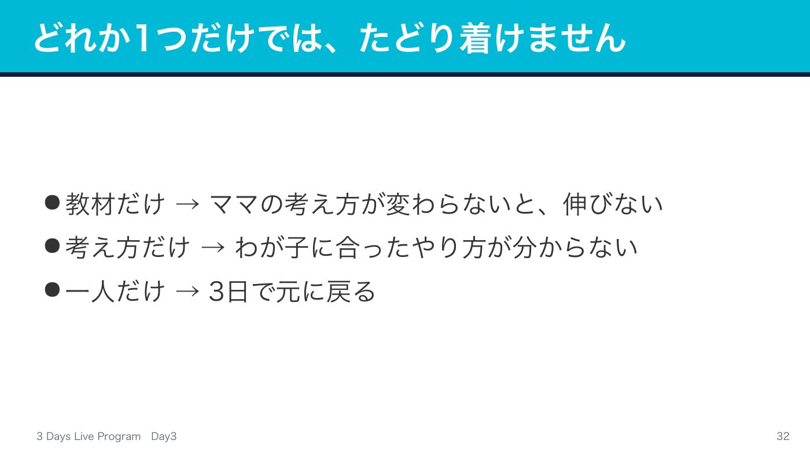
画面の文字：子どもへの時間とお金は、いつかけるのが一番いいのでしょうか？
ここで、1つ考えてみてほしいことがあります。
子どもへの時間とお金は、いつかけるのが、一番いいのでしょうか。
小さいうちでしょうか。小学生でしょうか。受験のときでしょうか。
【少し間を取る】
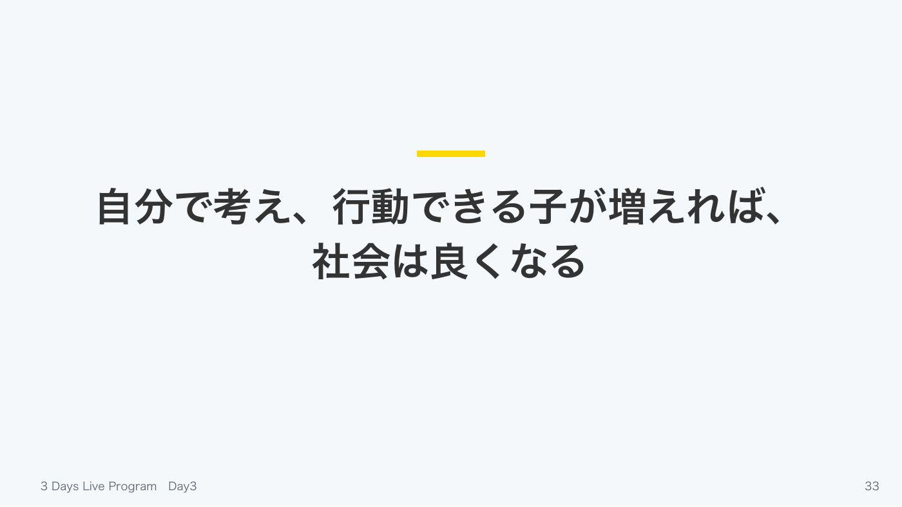
画面の文字：小さいうちが、一番返ってくる／ノーベル経済学賞 ヘックマン教授の研究 学校に入る前の教育が、一番大きく返ってくる 8歳までに根っこが育てば、その後は自分で伸びる
これを研究したのが、ヘックマン教授です。2000年にノーベル経済学賞を受けた方です。
生まれてから学校に入るまで。学校に通っている間。学校を出たあと。どの時期の教育に力を入れると、一番大きく返ってくるのか。
答えは、学校に入る前、小さいうちでした。
欧米では、この研究のあと、幼児教育に力を入れる国が増えました。
塾や受験にお金がかかるのは、もっと先だと思われがちです。でも、一番効くのは、今なんですね。
そして、8歳までに学びの根っこが育てば、その後は自分で伸びていく。ずっと塾に通い続けなくても、よくなるんです。
（確認待ち：ヘックマン教授の研究の出どころと、使える図）
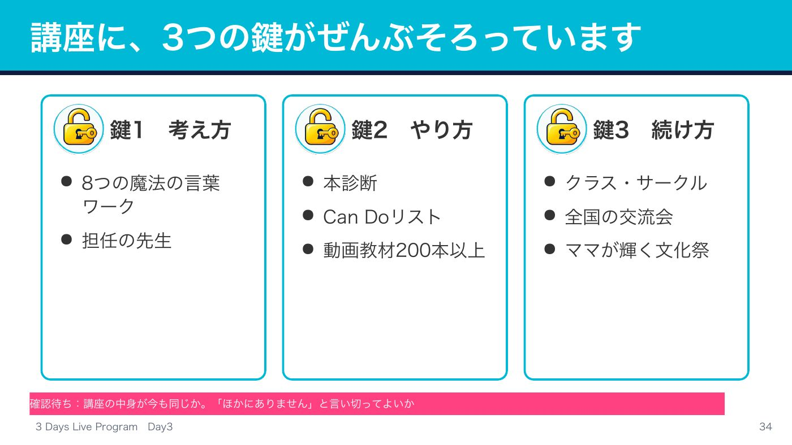
画面の文字：ご主人には、診断の結果を見せてください／グラフなので、お子さんの今が一目で分かる 個別診断に、ご主人と一緒に参加も大歓迎
「いいなと思うけど、夫に何て言おう」
そう思った方も、いらっしゃると思います。
大丈夫です。診断の結果を、ご主人に見せてください。
グラフになっているので、お子さんの今が、一目で分かります。言葉で説明するより、ずっと伝わります。
個別診断に、ご主人と一緒に参加してくださるのも、大歓迎です。
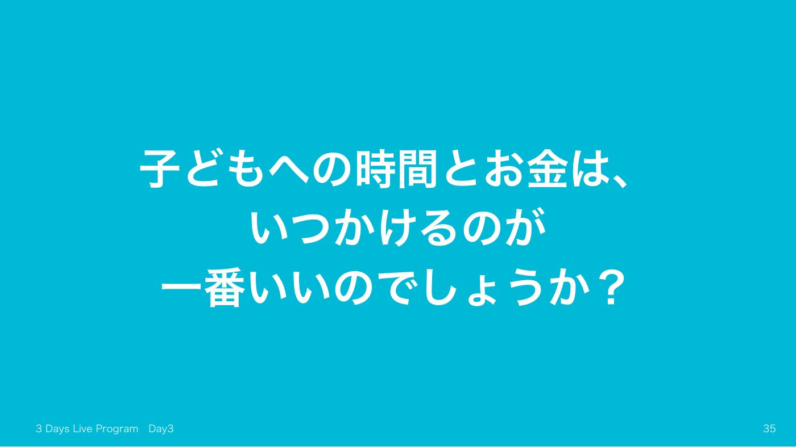
画面の文字：無料個別診断と、講座説明会／Q／講座で、何をやるの？／Q／どんなサポートがある？／Q／価格は、いくら？／説明会で、すべてお答えします／本講座の診断を、無料で体験／講座では、この診断でお子さんの成長を見ながら進めます その簡易版を、説明会と同時に無料で 結果は、認定講師が1対1で解説 お子さん1人・0〜4歳か5〜8歳
そこで、無料の個別診断と、講座の説明会をご用意しています。
講座の本診断の、体験版です。質問に答えていただくと、お子さんの8つの力がグラフになって出てきます。それを、診断ができる資格を持った認定講師が、1対1で解説します。
講座で何をやるのか、どんなサポートがあるのか、価格はいくらか。気になることは、そこで全部お答えします。
もうお申し込みくださった皆さん、ありがとうございます。順番に、日程をお取りしています。
年末に向けて、日程が混み合ってきます。まだの方は、早めにお申し込みいただくと、ご都合のいい日が取りやすいです。
（確認待ち：診断の対象年齢と、お子さん1人の制限が今も同じか）
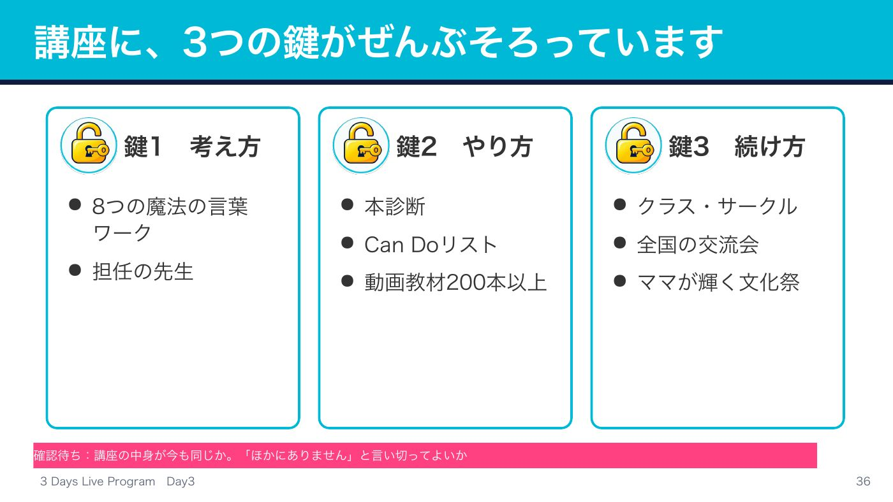
画面の文字：私たちと一緒に、この船に乗りませんか？
今すぐやってみるか、もう少し様子を見るか。決めるのは、皆さんです。
ただ、8歳までの時間は、今日も1日、進んでいます。
2050年に向けて、子どもたちの未来へ向かう船が、今、出ようとしています。
私たちと一緒に、この船に乗りませんか？
一人で頑張らなくて大丈夫です。仲間と一緒に、進んでいきましょう。
画面の文字：お申し込みの流れ／STEP 01／お申し込みフォームを送る／STEP 02／仮審査・日程の調整／STEP 03／当日、個別診断と説明会を受ける／チャットのリンク・QRコードから／https://sub.the-lead11.com/p/iq200-sem-v2／送ったあとに出てくる、事務局のLINEにもご登録ください
お申し込みの流れです。
フォームを送っていただいて、そのあとに出てくる事務局のLINEにもご登録ください。日程のやりとりは、LINEで進めます。
【チャットにQRとURLを貼る。録画で見ている方には、オープンチャットにも入っていると伝える】
（確認待ち：申し込みページのURLが次のクールのものか）
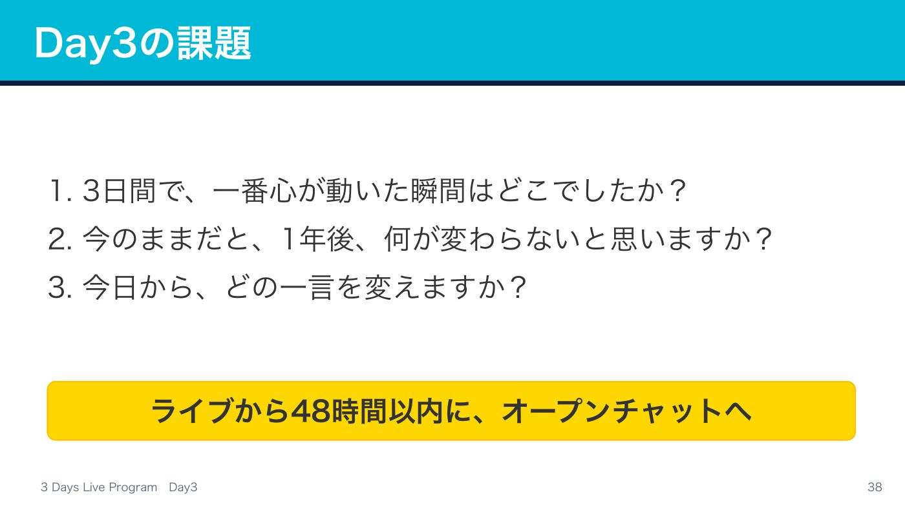
画面の文字：Day3の課題／ライブから48時間以内に、オープンチャットへ／1. 3日間で、一番心が動いた瞬間はどこでしたか？ 2. 今のままだと、1年後、何が変わらないと思いますか？ 3. 今日から、どの一言を変えますか？
最後の課題です。3つあります。
1つ目。3日間で、一番心が動いた瞬間は、どこでしたか？
2つ目。今のままだと、1年後、何が変わらないと思いますか？
3つ目。今日から、どの一言を変えますか？
3つ目は、小さなことで大丈夫です。「違うよ」を、1回だけ「なんでだと思う？」に変えてみる。それで十分です。
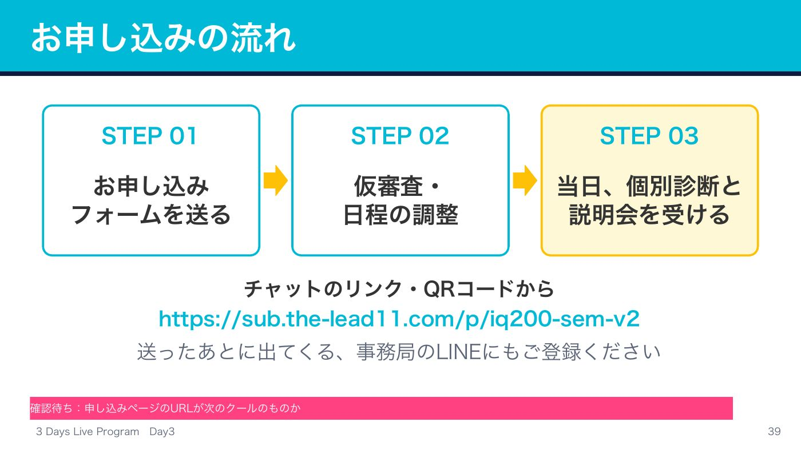
画面の文字：3日間の課題で、この2本がもらえます／受講生さんが講座で使っている動画教材の一部を、プレゼント／Sink or float?（浮く？ 沈む？）／お家にあるもので、浮くか沈むかを親子で試す。英語と、考える力を一緒に／I can sing a rainbow／歌って体を動かしながら、色の英語に親しむ／Day1〜Day3の課題を、それぞれライブから48時間以内に、オープンチャットへ
3日間の課題を出してくださった方には、この2本の動画教材をプレゼントします。
受講生さんが、講座で実際に使っている教材の一部です。
届いたら、ぜひ今日お話しした一言と一緒に、お子さんと遊んでみてくださいね。
（確認待ち：プレゼントの受け取り方）
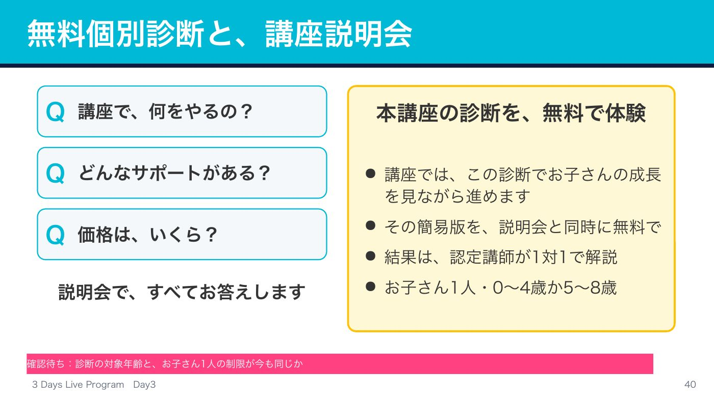
画面の文字：ここまでで、聞きたいことはありますか？
ここまでで、聞きたいことはありますか？ 個別診断のことでも、講座のことでも、チャットに書いてくださいね。
【チャットの質問に答える。よくある質問：お子さんが一緒でもよいか、夜遅い時間でもよいか、何歳から受けられるか】
3日間、本当にありがとうございました。
どんな時代になっても大丈夫な子は、育てることができます。お家で、ママの手で、育てることができます。
皆さんと、また個別診断でお会いできるのを、楽しみにしています。
これからも、オープンチャットでお話ししていきましょう。おやすみなさい。